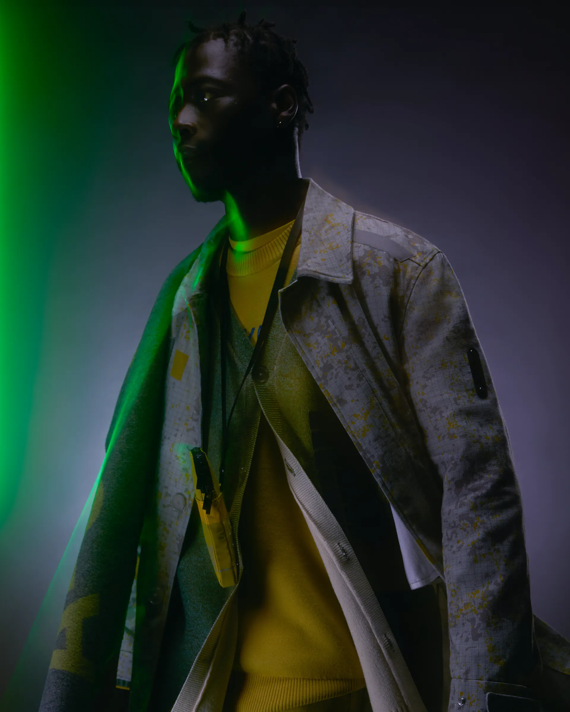
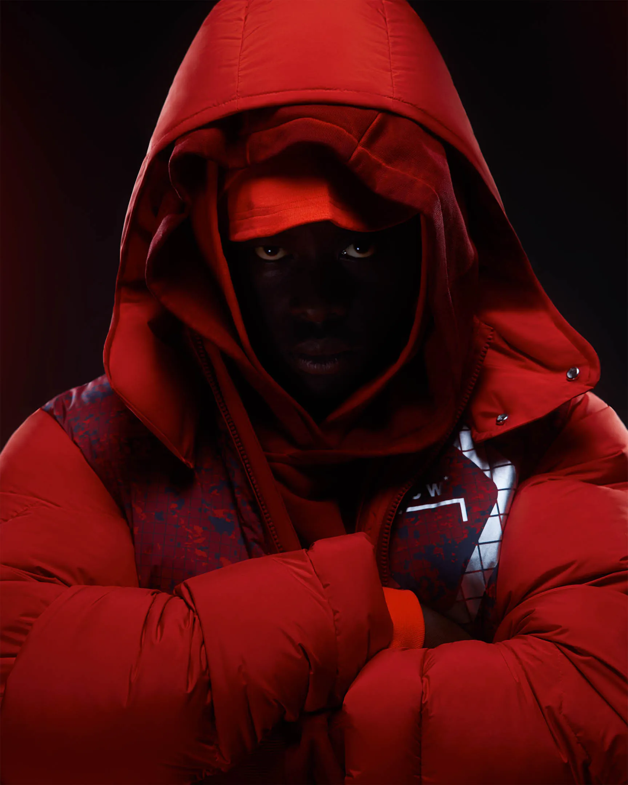
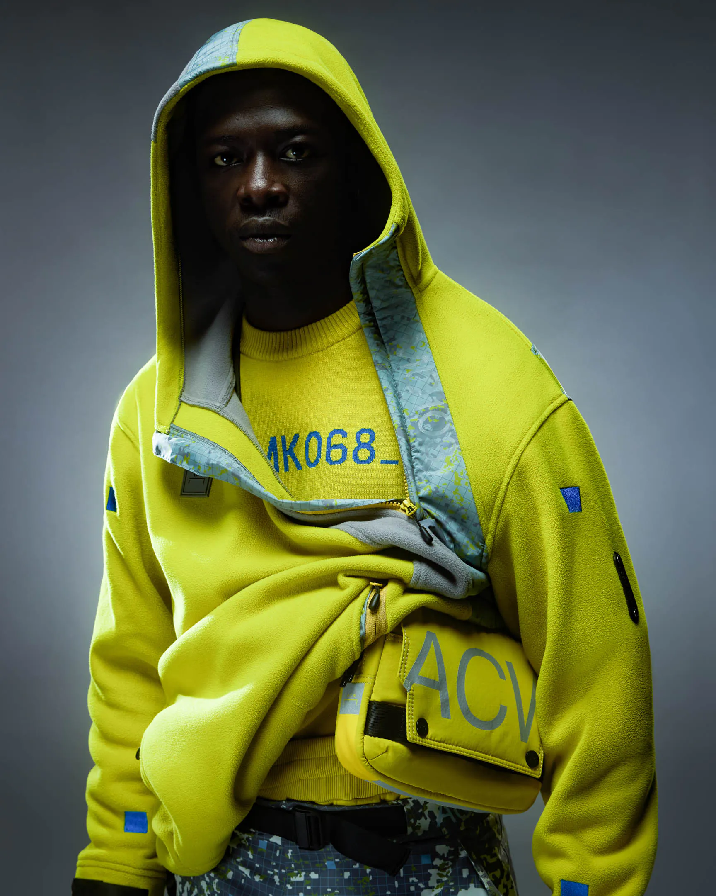
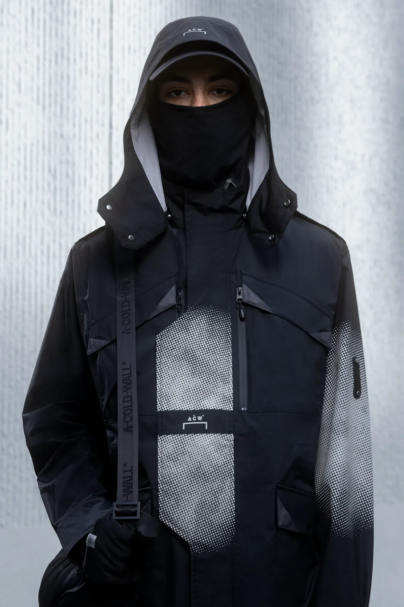
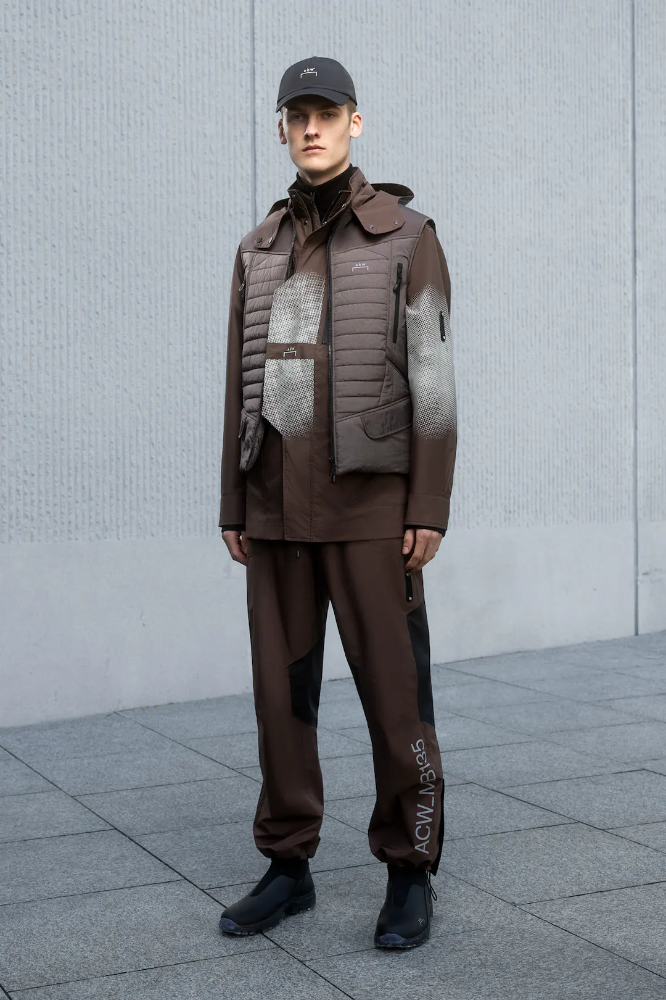

Pre-Fall 2022 Campaign
Pa Salieu for A-COLD-WALL* Pre-Fall Campaign
A-COLD-WALL* present the Pre-Fall 2022 campaign led
by celebrated British musician Pa Salieu.

- 
For Pre-Fall 2022, photographer Ken-Tonio Yamamoto applies his futurist lens to capture key pieces from the line - garments focused on protection, insulation, volume and digital graphics. Volt colour palettes, technical detailing and reconfigured graphics are absorbed into a singular visual - light, shadow and distortion lending the imagery a three-dimensional appearance, Pre-Fall 2022 brought to life.
- 
- 
Crafted from a tactile blend of merino wool, this season’s knitwear characterises the visual cues of Pre-Fall 2022. All over digital prints add increased depth to ribbed knit weaves while distorted matte plastisol ink developments and pigmented dye embroidery signal seasonal commitments to material exploration.
- 
- 
M-65 MKVI
Furthering study into the signature M65 jacket, the classic silhouette is updated with minimalist design sensibilities for Pre-Fall 2022. Lightweight and versatile, this season’s model is constructed from durable 3-layer plain weave fabric paired with performance membrane, while customisable features reiterate a value system built on adaptability and engagement.